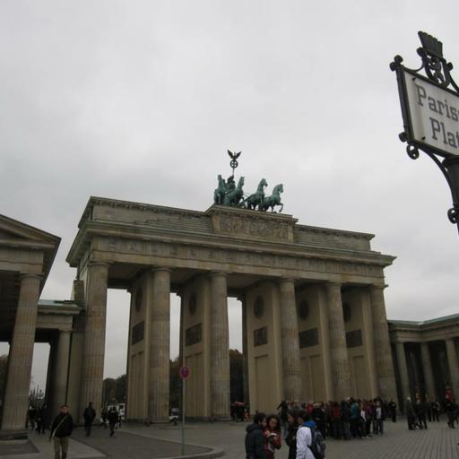
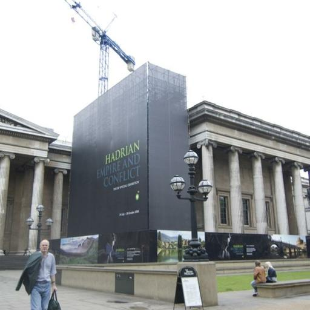

Generating 3D-Consistent Videos from Unposed Internet Photos
Anonymous CVPR Submission -- Supplemental Material (Qualitative Results) Paper ID 5733
Generated Videos of Ours (Full)
Scene 1/N
The generated video simulates a camera movement linking all input images, progressing from input 1 to n.
The green border denotes the first video frame, which should correspond to the first input image.
The red border denotes the last video frame, which should correspond to the last input image.
Unposed internet photos from the Phototourism Dataset
Scene 1/N
The generated video simulates a camera movement linking all input images, progressing from input 1 to n.
The green border denotes the first video frame, which should correspond to the first input image.
The red border denotes the last video frame, which should correspond to the last input image.
Unposed photos from the Re10k Dataset
Qualitative Comparisons (Paper Section 4.1)
Scene 1/N
Input Images
The generated videos simulate camera movements linking all input images, from input 1 to n.
The green border denotes the first video frame, which should correspond to the first input image.
The red border denotes the last video frame, which should correspond to the last input image.
Applications
3D Gaussian Splatting via InstantSplat (Paper Section 4.3)
Input Images

Left: on internet photos; Right: on generated frames
Input Images

Left: on internet photos; Right: on generated frames